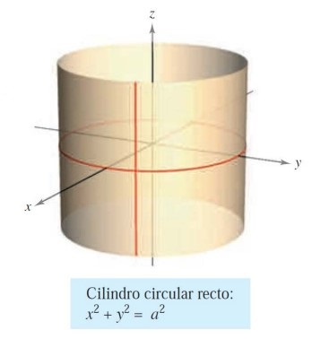
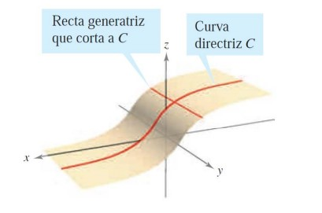
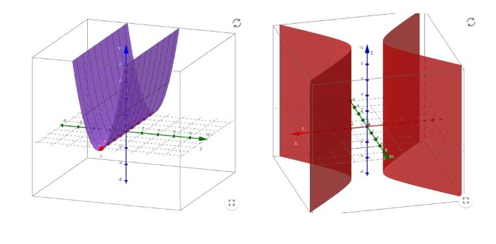
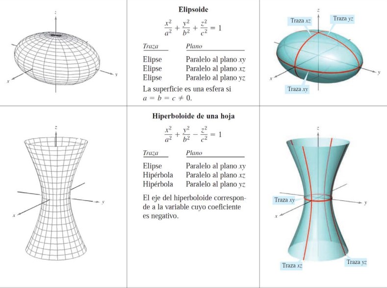
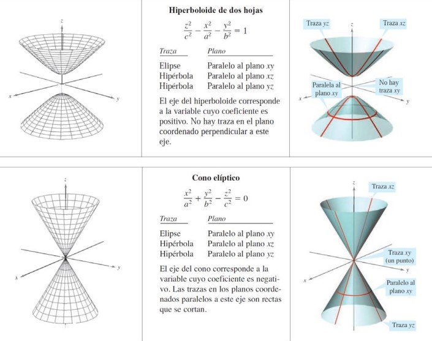
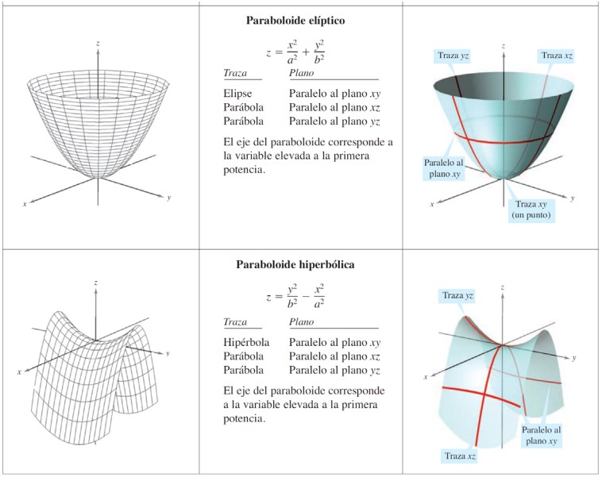
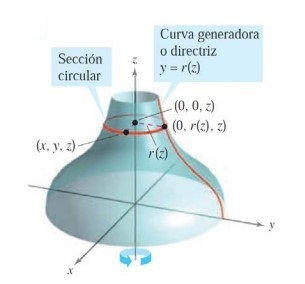

Superficies en el espacio
Contents
1.7. Superficies en el espacio#
En esta sección vamos a estudiar las ecuaciones de algunos tipos más complejos de superficies: cilíndircas, cuádricas y de revolución.
1.7.1. Superficies cilíndricas#
Hasta ahora hemos estudiado dos tipos de superficies:
Esferas, en la sección Ecuación de la esfera: \(\left(x- x_{0}\right)^2 + \left(y- y_{0}\right)^2 + \left(z- z_{0}\right)^2 = r^2\).
Planos, en la sección Ecuaciones del plano: \(Ax+By+Cz+D=0\).
Vamos ahora con un tercer tipo de superficie en el espacio llamada superficie cilíndrica o, simplemente, cilindro.
Vamos a pensar, para fijar ideas, en un cilindro circular recto, como mostramos en la siguiente figura:
{kind=link}
Este cilindro se genera cuando una recta vertical (es decir, paralela al eje \(Z\)) se mueve alrededor de la circunferencia \(x^2+y^2=a^2\) en el plano \(XY\). Generalizamos esta idea en la siguiente definición:
Definition (Superficie cilíndrica)
Sea \(C\) una curva sobre un plano y \(L\) una recta no paralela a ese plano. Llamaremos superficie cilíndrica a la superficie que generan todas las rectas paralelas a \(L\) que cortan a \(C\).
Llamaremos a \(C\) curva generadora (o directriz) y llamaremos recta generatriz a \(L\).
Sin pérdida de generalidad, podemos suponer que \(C\) está en uno de los tres planos de coordenadas. Además, en esta asignatura nos limitaremos a estudiar cilindros rectos, es decir, cilindros cuyas recta generatriz es perpendicular al plano de coordenadas que contiene a \(C\).
{kind=link}
Para describir la ecuación de un cilindro recto, basta con dar la ecuación de la curva \(C\) en el plano de coordenadas en que se encuentre, ya que la tercera coordenada, al generarse por una recta perpendicular a este plano, será arbitraria.
Por ejemplo, para el cilindro circular recto con el que empezábamos esta subsección, la ecuación en el espacio será \(x^2+y^2 = a^2\), ya que podemos elegir cualquier \(z\) para este cilindro.
Mostramos a continuación (utilizando la aplicación de Geogebra de Allan Avendaño, https://www.geogebra.org/m/VJfSv5Rn) un cilindro parabólico, de ecuación \(z = y^2\), y un cilindro hiperbólico, de ecuación \(x^2-y^2 = 4\).
{kind=link}
1.7.2. Superficies cuádricas#
Las superficies cuádricas responden a la ecuación general \(P_{2}(x,y,z) = 0\), siendo \(P_{2}\) un polinomio de orden \(2\) en las variables \(x\), \(y\) y \(z\), es decir
En dimensión 3 juegan el mismo papel que las secciones cónicas en el plano.
De aquí salen 6 tipos básicos de superficies cuádricas: elipsoide, hiperboloide de una hoja, hiperboloide de dos hojas, cono elíptico, paraboloide elíptico y paraboloide hiperbólico (mira en la wiki: https://es.wikipedia.org/wiki/Cuádrica).
  {kind=link}
{kind=link}
{kind=link}
1.7.3. Superficies de revolución#
El quinto tipo de superficie que vamos a estudiar son las superficies de revolución.
Podemos pensar, por ejemplo, la gráfica de una función \(y = r(z)\) en el plano \(YZ\). Si esta gráfica gira alrededor del eje \(Z\) forma una superficie de revolución:
{kind=link}
La traza de la superficie en el plano \(z=z_{0}\) es un círculo cuyo radio es \(r\left(z_{0}\right)\) y cuya ecuación es
Si en vez de centrarnos en el círculo de radio \(r\left(z_{0}\right)\) dejamos variar \(z\) en un determinado intervalo (o en todos los números reales) obtendremos una superficie 3D.
De forma similar se pueden obtener ecuaciones de superficies de revolución al situar una curva en uno de los planos de coordenadas y dejarla girar alrededor del eje perpendicular.
Definition (Superficie de revolución)
Si la gráfica de una función \(r\) se gira sobre uno de los ejes coordenados, la ecuación de la superficie de revolución resultante tendrá una de las siguientes formas:
Al girar alrededor del eje \(X\): \(y^2+z^2 = \left[ r(x) \right]^2\).
Al girar alrededor del eje \(Y\): \(x^2+z^2 = \left[ r(y) \right]^2\).
Al girar alrededor del eje \(Z\): \(x^2+y^2 = \left[ r(z) \right]^2\).